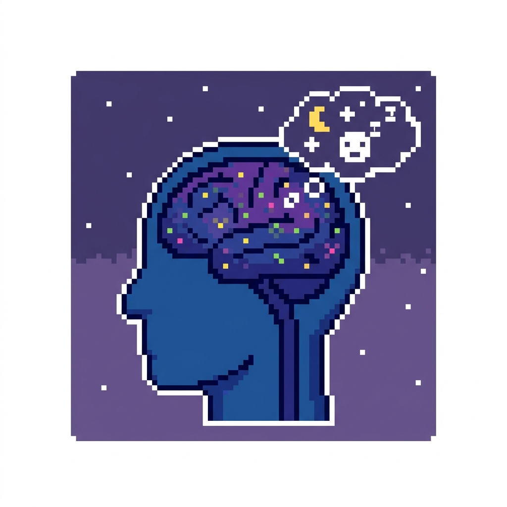
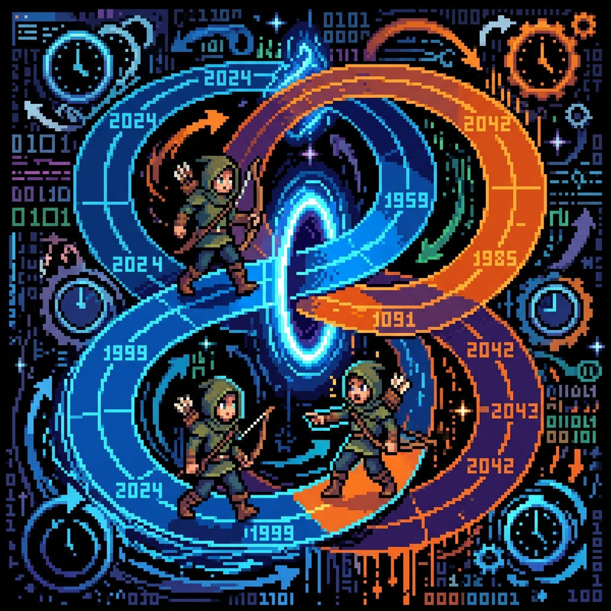

Meu primeiro post
Por: Saul Hernandez
Boas-vindas ao meu novo blog! Aqui vou compartilhar dicas de programação e curiosidades da área de tecnologia.
vou compartilhar conhecimentos sobre tecnologia e programação
Por: Saul Hernandez
Boas-vindas ao meu novo blog! Aqui vou compartilhar dicas de programação e curiosidades da área de tecnologia.
Por: Saul Hernandez
Os sobrenomes surgiram por uma necessidade prática: diferenciar pessoas com o mesmo nome. Na Idade Média, com o crescimento das cidades e do comércio, ter apenas um nome próprio já não era suficiente para a cobrança de impostos, registros de propriedade ou contratos civis.

Por: Saul Hernandez
Os sonhos ocorrem principalmente na fase REM, quando o cérebro fica muito ativo, mas o corpo permanece paralisado. Durante o sonho, as áreas ligadas às emoções e memórias funcionam a pleno vapor, enquanto a região responsável pela lógica reduz a sua atividade por isso tudo parece real, mesmo sendo ilógico. A ciência sugere que esse processo serve para consolidar memórias, organizar emoções e "limpar" o cérebro para o dia seguinte.

Por: Saul Hernandez
Os paradoxos temporais são contradições lógicas que surgem quando a viagem ao passado altera a relação de causa e efeito. O caso mais famoso é o Paradoxo do Avô: se viajares ao passado e impedires a existência dos teus antepassados, tu próprio nunca nascerias — o que tornaria impossível teres viajado para o impedir. Outro exemplo é o Paradoxo do Bootstrap, onde um objeto ou informação é enviado ao passado e fica num ciclo infinito, sem que ninguém o tenha inventado originalmente. Para resolver estas contradições, a física teórica propõe que o passado é impossível de alterar (Princípio de Novikov) ou que qualquer mudança cria automaticamente uma linha temporal alternativa num universo paralelo.